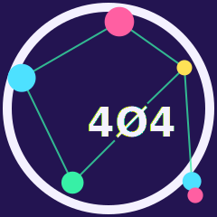
Personal brand guidelines — 90s warez-scene ASCII, arcade neon, and new-wave hacker, carried across the lab, the web presence, and everything printed.
ACiD/iCE-style ANSI group logos and boxed .NFO release tables, CRT/VHS chromatic-aberration
glitch text, 80s–90s arcade cabinet neon geometry, phone-phreaking iconography as a texture accent. Avoid corporate
SaaS gradients, soft rounded cards, and any "clean flat design" pass that sands off the CRT/ANSI texture — the texture
is the brand.
One background, one foreground, max two accents per surface. Each accent keeps a fixed meaning rather than swapping per surface.
Primary mark Selected — a node-link graph built from the real Libra constellation: star positions and magnitudes plotted from real astronomical data (Zubenelgenubi, Zubeneschamali, Zubenelakrab, Brachium, and its tail pair), with 404 centered in the scales' shape against a flat, fully opaque halo — a solid plate, never a gradient/glow.
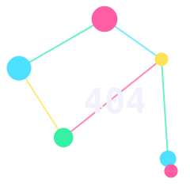
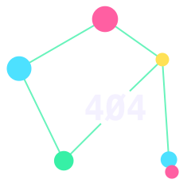
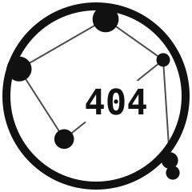
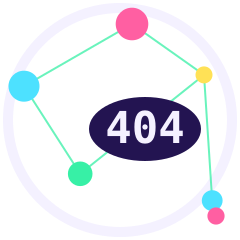
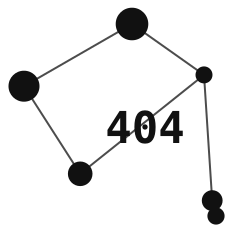
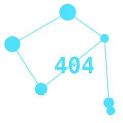
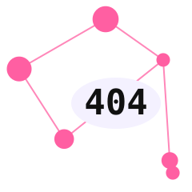
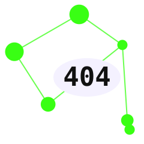
Flat single-tone cut for site chrome: no ring, no accent colors, transparent background — a dark mark for light-mode pages, a light mark for dark-mode pages. The 16/32/48px favicon sizes drop the numerals (unreadable that small) for a glyph-only silhouette instead.
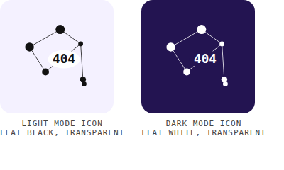
Microsoft Entra ID and the M365 admin center composite the square logo onto their own theme background, so a flat opaque fill reads as a box. These are transparent-PNG cuts instead: black for the light-theme slot, white for the dark-theme slot, and full color for either.
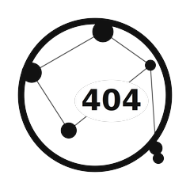
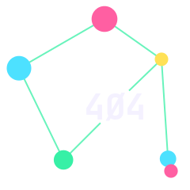
Same graph, rendered as a glowing sign — fluorescent racing-green, magenta, and cyan tube variants on a near-black backdrop.
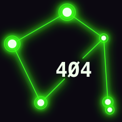
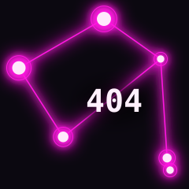
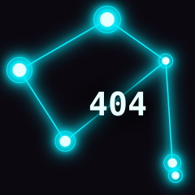
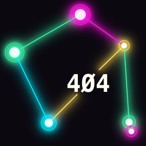
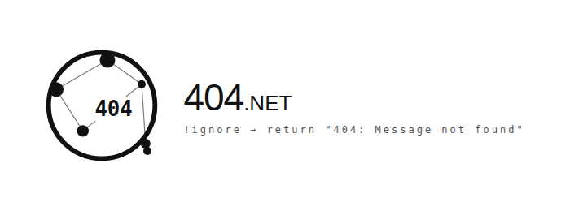
Full wordmark ERROR404.NET, full ANSI/glitch treatment — still valid anywhere the full domain name should read out loud (headers, hero lockups, merch, business cards). The Libra mark above is the icon of record wherever a mark stands alone.
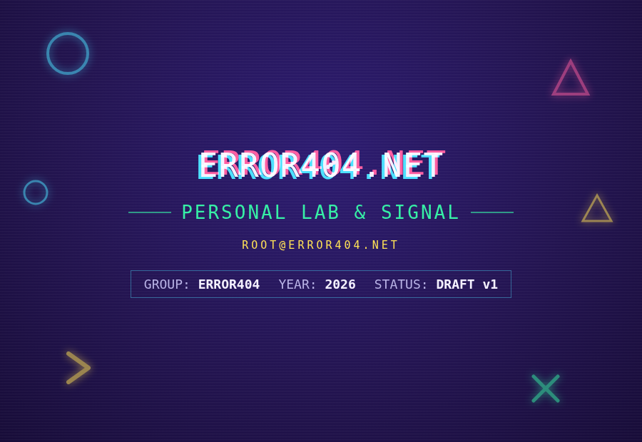
Full color everywhere doesn't survive a printer or a client's inbox — same brand, same voice, one leans into color/glow, the other leans harder on ASCII structure.
====), bracket fields, :: / ~/ notation carry the identity instead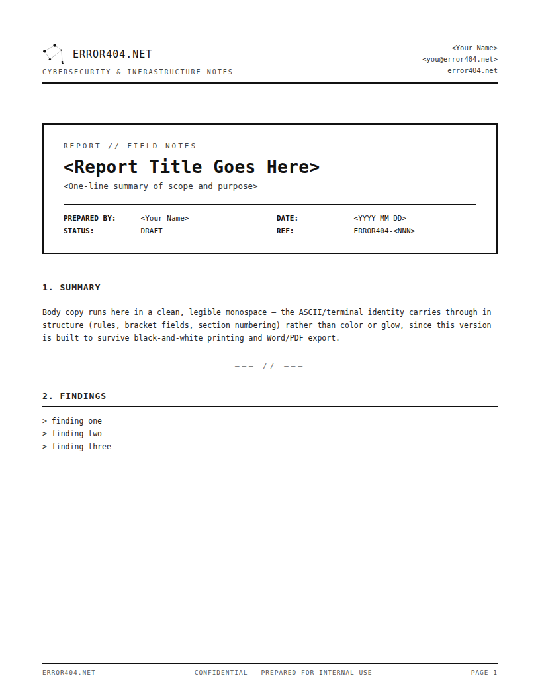
Print/Corporate mode, since email is functionally a plain-text medium.
<Your Name> ~/ <you@error404.net> :: <phone>
!ignore → return "404: Message not found"
Format shown above — the real signature (with your actual contact details) stays in your private guideline docs, not on the public site.
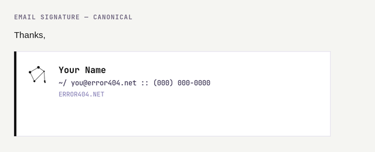
A richer HTML version for the actual M365/Outlook mailbox — light-touch color (the mark plus a single accent rule), not the full palette, since a signature rides on every outbound message. Source: email-templates/.
Ready-to-use files built from this system — Word, PowerPoint, HTML email, and a dedicated report format.
Every file uses <Bracketed> placeholders, never real contact details.
Browse them all: logos/, entra-m365/, office-templates/, email-templates/, social/, discord/.